О программе
Qt5 WebView DESKTOP API позволяет создавать в linux xubuntu и windows десктоп-приложения используя javascript, html и css.
Вам не придётся разбираться с nodejs и npm, установить это api так же просто, как браузер и вы тут же получите все возможности Qt5 WebView и не только их.
Особенно легко это должно быть web-разработчикам со стажем, знакомым с базовыми функциями языков javascript ES5 и PHP.
Это прежде всего Qt5 WebView, (в windows Qt4.6.3 WebView), то есть по сути web-браузер, лишенный адресной строки и работающий с файлами на диске пользователя.
Помимо этого программа предоставляет javascript API, позволяющее запускать программы операционных систем Linux Xubuntu и Windows, взаимодействовать с файловой системой и некоторыми другим функциями операционных систем, такими как использование системных диалогов или запуск других программ (что особенно актуально для linux xubuntu, в которой всё ещё очень мало классного GUI но огромное количество отличных консольных программ).
Это позволяет создать вам ваше десктоп-приложение так же легко, как если бы вы создавали web страницу.
Предназначено это прежде всего для разработчиков, которым надо время от времени быстро написать какую-то GUI утилиту, предназначенную в основном для собственного использования.
Разработка программ для широкого круга пользователей возможна, но вы должны понимать, что старые версии Qt содержат уязвимости. Если вы решите распостранять приложения, написанные с помощью этого API, вы должны сначала пересобрать исполняемый файл, реализующий api с актуальной версией Qt - иначе вы скорее всего навредите тем людям, которые используют ваши приложения.
Исходный код доступен на github
Почему не Qt 6 и не javascript ES6+ и не Apache Cordova
Здесь несколько слов о том, зачем я это вообще написал и продолжаю писать, когда есть например Apache Cordova. И почему использую старую версию библиотеки Qt, когда есть новая.
Я разрабатываю Qt5 WebView Desktop API с целью решить несколько своих проблем. Qt5 WebView Desktop API (и приложения, написанные с его использованием) предназначены для разработчиков и пользователей, которые их тоже ощущают и согласны с высказываниями, которые я привёл ниже.
Мне не нравится чрезмерная зависимость Xubuntu от наличия Интернета и практически полное отсутствие обратной совместимости. Я хотел бы иметь возможность сохранить deb пакеты многих программ, когда я работал в Xubuntu 9.10 и установить их снова в Xubuntu 12.04, а потом в Xubuntu 14.04, 18.04, 22.04 и так далее (первая цифра в названии версий Xubuntu - это год).
Речь не о всех программах (например, web-браузеры точно необходимо обновлять как можно чаще), но некоторые из программ, такие как Kate, Inkscape или KolourPaint (список легко можно продолжить) по сути не менялись все эти годы (или я использую лишь ту часть их функций, которые не менялись все эти годы).
Мне точно хватило бы функционала перечисленных программ тех версий, которые были установлены в Xubuntu 9.10. Но, нормально установить deb пакеты со старыми версиями невозможно. Иногда возможно распаковать их вручную, вместе со старыми библиотеками - но всё это не то, отнимает уйму времени и обычно приводит к проблемам с установкой других (новых) приложений.
Я вынужден скачивать новые версии этих программ, когда перехожу на новую LTS версию. Когда интернет хороший, это вообще не проблема. Но он хороший не всегда.
При этом мне нравится именно Xubuntu и я не хочу менять её на что-то другое. Нравится именно другой стороной описанной выше проблемы: если я регулярно раз в 5 лет перехожу на новую LTS, у меня нет проблем с новейшими обновлениями браузеров и новейшими обновлениями безопасности.
В итоге я захотел иметь возможность максимально просто создавать десктопные приложения для Xubuntu и не пересобирать их бинарник каждый раз при выходе новой LTS версии. И я этого добился, мои первые небольшие приложения, написанные ещё на 32-разрядной Xubuntu 14.04 успешно перекочевали в 64-разрядную Xubuntu 18.04, а в 2022 году убедился, что в Xubuntu 22.04 они тоже работают и мне не нужен интернет, чтобы их установить. Да, конечно мне пришлось пересобрать бинарник Qt5 WebView для 64-разрядной архитектуры, но есть некоторая разница, делать это раз в 8 лет (и не более, пока не придётся переходить на 128-разрядные ПК) или каждые 4 - 5 лет.
Я хочу написать с помощью Qt5 WebView аналоги тех программ, которые фактически не менялись в течении последних нескольких лет, чтобы не скачивать их из Интернета бесконечное число раз.
-
Как и многие жители постсоветского пространства я начинал пользоваться ПК с установленной ОС Windows. О Linux я узнал гораздо позже и перейдя на него естественно искал программы, максимально похожие на те, к которым я привык в Windows.
Debian и Ubuntu имеют огромное количество программ, но получилось так, что лучшие из них завязаны на разные графические оболочки. Примерно с 2014 года я окончательно выбрал для себя XFCE, но я не хочу отказываться от KolourPaint и Kate. В них есть функции, которых нет в Gimp, Gpaint и Mousepad.
Поэтому из-за этих двух программок я вынужден каждый раз при обновлении версии Xubuntu скачавать массу библиотек KDE. Это совсем не проблема при наличии быстрого Интернета, но это проблема, когда его нет.
Я обязательно напишу их аналоги используя Qt5 WebView и избавлюсь от этой необходимости.
-
Пока я учился в университете, мы писали программы на Pascal и C++, на C# и Java.
Оказалось, что программировать на javascript и создавать интерфейсы на html и css гораздо проще, чем с помощью перечисленных языков программирования. Мечталось о "браузере", который наконец сможет полноценно работать с файловой системой ПК, с реестром, взаимодействовать напрямую с базой данных.
И вот появилась Apache Cordova. Но пустое оконное приложение для linux i386 у меня просто не взлетело. Собралось без ошибок, но не запустилось. Ок, возможно у меня неправильный радиус кривизны рук. Но. Я хочу один раз что-то установить на свой ПК. Потом выполнить
что-то /путь/к/моей/папке/с/index.html
И это должно работать так же безотказно, надёжно, как если бы вместо "что-то" я ввёл chrome или firefox. Ну и да, "что-то" должно уметь работать с файловой системой и запускать консольные программки в фоне.
Заявление немного смелое, но пока я вижу, что Qt5 WebView работает именно так.
qdjs /путь/к/моей/папке/с/index.html
и никаких проблем. Причем qdjs я ставлю из одного и того же архива с 2014 года. Я иногда перекомпилирую бинарник, потому что добавляю в него новые функции, но он работает с теми же самыми версиями библиотек, с которыми работал в 2014 году.
Я понимаю, что это небезопасно. Но я, черт возьми, не боюсь и даже хочу хотя бы раз убедиться в том, что это небезопасно на собственном опыте.
Я разумный человек и не использую это на том компьютере, на котором работаю с данными других людей.
Я понимаю, что люди, у которых с моим решением будут те же проблемы, что у меня были с Apache Cordova обязательно найдутся. Но я рад, что буду не в их числе. А поскольку я совсем не уникум, должно найтись много разработчиков, которым пользоваться Qt5 WebView DESKTOP API окажется легко и удобно.
-
Мне не нравится npm. Потому что меня просто убивает необходимость при создании каждого нового проекта загружать из Интернета безумное количество маленьких скриптов, а если их потом ради интереса сжать, архив весит 50 - 70 мегабайт. Ладно бы это происходило разово, но мы вынуждены это делать каждый раз, когда создаем новый проект. Или просто хотим попробовать что-то новое в отдельном проекте. Это ужасно.
Вместе с тем я хочу писать на javascript для десктопа. Особенно для Xubuntu. Используя Qt5 WebView DESKTOP API (я сейчас представил, что я не его создатель) я должен один раз скачать из интернета архив 40 Мб, потом время от времени скачивать обновление в виде бинарного файла, который весит меньше 1 Мб. Ну а приложения для Qt5 WebView DESKTOP API обычно весят не более, чем средняя web страница.
-
Qt - кроссплатформенная библиотека. Вместе с тем, с выходом каждой новой версии деплоить Qt приложения в Windows всё сложнее. Однажды (в 2015 или 2016 году) я написал на заказ windows-приложение используя Qt WebView. Я использовал последнюю стабильную на тот момент версию Qt (не берусь сейчас сказать, какую именно), так как был озабочен пресловутой безопасностью. Проект был небольшой, я, заказчик приложения и несколько клиентов - пользователей.
Мы тщательно протестировали продукт перед релизом. У нас всё было ок. Но, несмотря на небольшое количество пользователей тут же нашлось несколько пользователей, у которых приложение просто отказалось запускаться. И это несмотря на то, что я успешно тестировал в том числе на только что установленной Windows 10 Insider Preview на которую ничего, кроме моей программы установлено не было.
Согласовав с заказчиком я произвел "даунгрейд" версии Qt, использовав Qt 4.6.8, на которой ранее успешно писал программы для курсовых и диплома и проблема внезапно исчезла - все пользователи смогли запустить абсолютно тот же код, скомпилированный более ранней версией Qt.
-
Я не боюсь "застрять" на javascript ES5. Я его неплохо знаю и порой предпочитаю добиваться результата в виде работающих приложений, а не набивать шишки об незнакомые компоненты популярных фреймвёрков и недотестированные разработчиками новые возможности.
К тому же я не собираюсь ограничивать себя одним только программированием для
старого браузераQt5 WebView, описание которого вы возможно собираетесь прочитать. Мне хватает ES6+ на работе и в других местах.
HTML features
Здесь описаны специфичные для Qt5 WebView элементы html которые вы можете использовать в вашем приложении.
meta[name=windowButtons]
Используйте мета-тег с атрибутом name windowButtons для управления кнопками окна вашего приложения. Атрибут content тега содержит строковое представление битовой маски, нули и единицы, которые управляют видимостью кнопок вашего окна.
Пример тега:
<meta name="windowButtons" content="1110" >
Смысл цифр в content (перечислены справа налево, нумеруются с нуля)
| Номер бита | 0 | 1 |
|---|---|---|
| 0 | Не показывать кнопку контекстной справки | Показывать кнопку контекстной справки |
| 1 | Не показывать кнопку закрытия окна | Показывать кнопку закрытия окна |
| 2 | Не показывать кнопку максимизации окна | Показывать кнопку максимизации окна |
| 3 | Не показывать кнопку минимизации окна | Показывать кнопку минимизации окна |
Значение по умолчанию: 1110
Атрибуты стиля окна
Задаются также в метатеге windowButtons
| Атрибут | Значение |
|---|---|
| onlyTop | Показывать окно на переднем плане |
| noFrame | Показывать окно без рамки |
| fulScreen | Показывать окно без рамки и развернутым на весь экран |
| width | Ширина окна приложения, например width="100", двойные кавычки обязательны |
| height | Высота окна приложения, например height="100", двойные кавычки обязательны |
| fixed | Если заданы width или height и fixed окно становится неизменяемого размера |
Пример окна 800 на 600 пискелей, не позволяющего пользователю изменять размер
<meta name="windowButtons" content="1110" width="800" height="600" fixed >
Главное меню окна программы
Чтобы добавить в ваше окно приложения главное меню программы, вам надо добавить внутри тега head html код menubar, похожий на пример ниже:
<html lang="ru"> <head > <!-- здесь теги title, meta[windowButtons]... и другие, которые вам нужны --> <menubar style="display:none"> <menu title="Action"> <item onselect="onClickExitMenu()" >Quit Ctrl+Q</item> </menu> <menu title="Language"> <item onselect="onClickSelectEn()" >English</item> <item onselect="onClickSelectRu()" >Russian</item> </menu> </menubar> </head> <!-- здесь тег body... --> </html>
Это создаст главное меню окна программы, как на рисунке
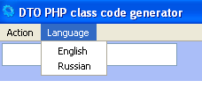
Qt5 WebView парсит тег menubar при запуске и добавляет данные из него в меню окна. Но оно никак не обрабатывает его видимость. Поэтому в примере тегу menubar добавлен стиль display:none; (иначе в вашем окне будут совершенно ненужные строки "Quit Ctrl+Q", "English", "Russian").
Обработчики нажатий на пунктах меню должны быть доступны в подключенном к окну js файле.
<script src="./js/mainMenuListeners.js" ></script>
И в файле определяем обработчики событий кликов мышью на пунктах меню:
function onClickExitMenu() { // Закрыть окно Qt.quit(); } function onClickSelectEn() { // Здесь реализуете смену языка интерфейса вашего приложения } function onClickSelectRu() { // Здесь реализуете смену языка интерфейса вашего приложения } // Добавляем поддержку хоткея window.onkeyup = onKeyUp; function onKeyUp(evt) { if (evt.ctrlKey) { switch(evt.keyCode) { case 81: // "Q" onClickExitMenu(); break; } } }
Desktop API
Управление окном приложения
Управление окном доступно из javascript кода через объект MW (от MainWindow - главное окно программы).
MW.resizeTo |
MW.resizeTo(Number width, Number height) |
|
Изменяет размер окна приложения. Координаты левого верхнего угла при этом не изменяются. Используйте MW.moveTo() при необходимости их изменить. Примечание: также доступна как Qt.resizeTo(Number width, Number height) |
|
|
Демо доступно в документации Qt WebView Desktop API после установки
|
|
MW.maximize |
MW.maximize() |
|
Разворачивает окно приложения на весь экран. |
|
|
Демо доступно в документации Qt WebView Desktop API после установки
|
|
MW.minimize |
MW.minimize() |
|
Сворачивает окно приложения на панель задач. Примечание1 : после первого запуска приложения работает, как ожидается, но после первого "свёртывания" и последующего восстановления путём клика на кнопку окна на панели в Xubuntu 18.04 функция как-будто бы не работает. Добиться устойчивой работы можно предварительно вызвав MW.showNormal(); и повторив это через небольшую задержку. Примечание 2: также доступна как MW.minimize() |
|
|
Демо доступно в документации Qt WebView Desktop API после установки
|
|
Пример кода:function onClickButtonMinimizeWindow(){ MW.showNormal(); MW.minimize(); // Для устойчивой работы в Xubuntu 18.04 с XFCE setTimeout(function() { MW.showNormal(); MW.minimize(); }, 100); } |
|
MW.showFullScreen |
MW.showFullScreen() |
|
Скрывает рамку окна и разворачивает окно на предний план. Примечание: также доступна как Qt.showFullScreen() |
|
|
Демо доступно в документации Qt WebView Desktop API после установки
|
|
MW.showNormal |
MW.showNormal() |
|
Показывает рамку окна если оно было скрыто функцией showFullScreen(). Примечание: также доступна как Qt.showNormal() |
|
|
Демо доступно в документации Qt WebView Desktop API после установки
|
|
MW.hideMainMenu |
MW.hideMainMenu() |
|
Скрывает главное меню окна приложения Примечание: также доступна как Qt.hideMainMenu() |
|
|
Демо доступно в документации Qt WebView Desktop API после установки
|
|
MW.showMainMenu |
MW.showMainMenu() |
|
Показывает главное меню окна приложения, если оно было скрыто вызовом MW.hideMainMenu(); Примечание 1: Если в верстке вашего окна главное меню не задано тегом menubar, функция естественно не покажет главное меню. Примечание 2: также доступна как Qt.showMainMenu() |
|
|
Демо доступно в документации Qt WebView Desktop API после установки
|
|
MW.moveTo |
MW.moveTo(Number x, Number y) |
|
Перемещает окно приложения. Аргументы - это координаты левого верхнего угла окна приложения. Примечание: также доступна как Qt.moveTo(Number x, Number y) |
|
|
Демо доступно в документации Qt WebView Desktop API после установки
|
|
Пример кода:function onClickButtonPosWindowOnScreenCenter(){ var w = 800, h = 600; MW.moveTo( (screen.width - w) / 2, (screen.height - h) / 2); MW.resizeTo(w, h); } |
|
MW.setIconImage |
MW.setIconImage(String pathToPng32x32) |
|
Устанавливает иконку в окне приложения рядом с заголовком окна. Аргумент - путь к png файлу изображения размером 32 на 32 пикселя или 24 на 24 пикселя. Примечание: В Xubuntu 14.04 - 22.04 изображения слева от текста заголовка окна поддерживает тема Kokodi. Примечание: также доступна как Qt.setWindowIconImage(String pathToPng32x32) |
|
|
Демо доступно в документации Qt WebView Desktop API после установки
|
|
MW.close |
MW.close() |
|
Закрывает окно приложения и завершает его работу Примечание: также доступно как App.quit(); и Qt.quit(); |
|
|
Демо доступно в документации Qt WebView Desktop API после установки
|
|
Qt.setTitle |
Qt.setTitle(String title) |
|
Позволяет изменить заголовок окна |
|
|
Демо доступно в документации Qt WebView Desktop API после установки
Набирайте текст в текстовом поле:
|
|
Взаимодействие с окружением
Env.exec |
Array Env.exec(String command, Function|Array|Object onFinish, Function|Array|Object onStdOut, Function|Array|Object onStdErr) |
|
Запускает другое приложение или shell или batch файл. Примечание 1: Если запускаемому приложению передаются аргументы, лучше использовать shell или batch файлы. В противном случае работа запуска не гарантируется. Примечание 2: В windows чтение stdin и stdout не поддерживается. Примечание 3: В windows при запуске демо ниже вместо терминала xterm будет запущен Блокнот. Примечание 4: Для завершения процесса в этом примере используется kill в linux xubuntu и taskkill в windows. Если их нет в системе, закрытие запущенной программы не будет работать. |
|
| Аргументы метода | |
String command |
String command. Команда для запуска, например g++, хterm или notepad. |
Function|Object|Array onFinish |
Function onFinish(String stdout, String stderr). Функция, которая будет вызвана, когда выполнение команды завершится. Аргумент stdout содержит весь вывод команды в стандартный поток вывода. Аргумент stderr содержит весь вывод команды в стандартный поток ошибок. Не работает в windows. Вызов функции происходит, но stdout и stderr в windows всегда пусты. |
|
Примечание: В windows чтение stdin и stdout не поддерживается. Можно использовать обходной путь, заключающийся в том, что ваша программа сначала создаёт командный batch файл с перенаправлением потоков в текстовые файлы. Запустив этот файл ваша программа может например раз в 500 миллисекунд считывать из файлов, в которые выполняется перенаправление stdin и stdout, а контролировать, запущен ли процесс путём вызова PHP.isRun(innerProcessId); innerProcessId содержится во втором (с индексом 1) элементе массива, который возвращает jexec после запуска. |
|
Function|Object|Array onStdOut |
Function onStdOut(String stdout). Функция, которая вызвается немедленно, как только вызываемая программа что-то выводит в стандартный поток вывода. Не работает в windows. Вызов функции происходит, но stdout и stderr в windows всегда пусты. |
|
Примечание: В windows чтение из stdout не поддерживается. Можно использовать обходной путь, см. примечание к onFinish |
|
Function|Object|Array onStdErr |
Function onStdErr(String stderr). Функция, которая вызвается немедленно, как только вызываемая программа что-то выводит в стандартный поток ошибок. Не работает в windows. Вызов функции происходит, но stdout и stderr в windows всегда пусты. |
|
Примечание: В windows чтение из stderr не поддерживается. Можно использовать обходной путь, см. примечание к onFinish |
|
| Возвращаемое значение | |
Array result |
Array result. В нулевом элементе содержится идентификатор процесса в операционной системе. В элементе с индексом 1 внутренний идентификатор процесса. |
| Формат аргументов функции | |
Function |
Function onFinish(String stdout, String stderr). Имя функции может быть любым. Она должна быть доступна для вызова в области вызова окна. |
Object |
Object {context: Object, m: Function onFinish(String stdout, String stderr)}. |
|
Вы определяете объект. В context передаёте указатель на него, а в m - функцию, определённую в объекте. Это позволяет не засорять глобальную область видимости (см. ООП и всё что мы любим). |
|
Array |
Array [Object, Function onFinish(String stdout, String stderr)]. |
|
Вы определяете объект. В нулевом элементе массива передаёте указатель на него, а в первом - функцию, определённую в объекте. Это позволяет не засорять глобальную область видимости (см. ООП и всё что мы любим). |
|
|
Демо доступно в документации Qt WebView Desktop API после установки
Stdout:
Stderr:
|
|
Пример кода (stdout и stdin в windows не будет работать):function e(id) { return document.getElementById(id); } var RunProgrammExample = { runXTerm: function(){ var o = this, cmd = 'xterm'; if (!PHP.file_exists('/usr')) { cmd = 'notepad'; } this.xtId = Env.exec(cmd, [o, o.onFinishXT], [o, o.onStdOutXT], [o, o.onStdErrXT]); }, closeXTerm: function(){ var o = this, cmd = 'kill ' + this.xtId[0]; if (!PHP.file_exists('/usr')) { cmd = 'TASKKILL /PID ' + this.xtId[0] + ' /T'; } this.xtId = Env.exec(cmd, [o, o.onFinishXT], [o, o.onStdOutXT], [o, o.onStdErrXT]); }, onFinishXT: function(stdout, stderr) { e('xtStdOut').innerHTML += '<div>' + stdout + '</div>'; e('xtStdErr').innerHTML += '<div>' + stderr + '</div>'; }, onStdOutXT: function(stdout) { // e('xtStdOut').innerHTML += '<div>' + stdout + '</div>'; }, onStdErrXT: function(stdout) { // e('xtStdErr').innerHTML += '<div>' + stdout + '</div>'; } } function onClickRunXTerm() { RunProgrammExample.runXTerm(); } function onClickStopXTerm() { RunProgrammExample.stopXTerm(); } |
|
Env.isRun |
Env.isRun(Number innerProcId) |
|
Проверяет, завершён ли уже запущенный процесс. innerProcId это значение элемента массива, который возвращает Env.exec, с индексом 1. |
|
|
Демо доступно в документации Qt WebView Desktop API после установки
Stdout:
Stderr:
|
|
App.dir |
String App.dir() |
|
Возвращает путь к каталогу, в котором находится исполняемый файл приложения Примечание: Также доступна как String Qt.appDir() |
|
|
Демо доступно в документации Qt WebView Desktop API после установки
|
|
App.getArgs |
Array App.getArgs() |
|
Возвращает аргументы командной строки переданые приложению при запуске. Полезно например для вьюера (программы просмотра) фотографий. Например если пользователь настроил Windows чтобы все jpg файлы открывались в вашем вьюере, вам надо считать аргумент с индексом 1, который и содержит путь к выбранному пользователем файлу. Примечание: Также доступна как Array Qt.getArgs() |
|
|
Демо доступно в документации Qt WebView Desktop API после установки
|
|
MW.getLastKeyChar |
String MW.getLastKeyChar() |
|
Возвращает символ последней нажатой клавиши (если она алфавитно-цифровая). Важно, так как Qt5 WebView не позволяет считать символ нажатой клавиши в событиях keydown и keyup через свойство key. В этом случае вы можете использовать вызов MW.getLastKeyChar() чтобы получить его. В демо ниже в левом окне пытаемся получить символ клавиши, декодируя свойство javascript keyboardEvent.keyIdentifier. В Xubuntu 18.04 и Qt 5.2.1 это более-менее корректно работает только при латинской раскладке клавиатуры. В Windows и Qt 4.6.8 это работает и с латинской и с русской раскладками, но вам пришлось бы самим мониторить состояние Caps Lock и Shift. В правом окне вы видите результат вызова MW.getLastKeyChar() Примечание: String Qt.getLastKeyChar() |
|
|
Демо доступно в документации Qt WebView Desktop API после установки
Набирайте текст в текстовом поле:
JS key char:
Qt key char:
|
|
MW.getLastKeyCode |
Number MW.getLastKeyCode() |
|
Возвращает код последней нажатой клавиши. Важно, так как Qt5 WebView не позволяет корректно считать код нажатой клавиши в событиях keydown и keyup через свойство keyCode. В этом случае вы можете использовать вызов MW.getLastKeyCode() чтобы получить его. В демо ниже в левом окне пытаемся получить код клавиши, используя свойство keyboardEvent.keyCode. В правом окне вы видите результат вызова MW.getLastKeyCode(). Оно далеко не всегда совпадает с кодом javasript, но оно гораздо реже равно 0, что немаловажно. Примечание: также доступна как Number Qt.getLastKeyCode() |
|
|
Демо доступно в документации Qt WebView Desktop API после установки
Набирайте текст в текстовом поле:
JS event.keyCode:
Qt key code:
|
|
Env.openFileDialog |
String Env.openFileDialog(String caption, String dir, String filter) |
|
Открывает системный диалог выбора файла для чтения. Возвращает путь к выбранному файлу. Если файл не выбран, вернёт пустую строку. Примечание: Доступна также как String Qt.openFileDialog(String caption, String dir, String filter) |
|
|
Демо доступно в документации Qt WebView Desktop API после установки
Выберите текстовый или javascript файл и вы увидите его размер в байтах.
|
|
| Возвращаемое значение | |
String filename |
String filename. Возвращает путь к выбранному файлу. Если файл не выбран, вернёт пустую строку. |
| Аргументы метода | |
String caption |
String caption. Текст в заголовке диалога выбора файлов |
String dir |
String dir. Путь к каталогу, файлы которого покажутся при открытии диалога. |
String filter |
String filter. Расширения файлов, которые будут отображаться в диалоге. Например "*.txt *.js" укажет методу, что надо отображать только файлы с расширением txt и js. Если надо отобразить только например исполняемые файлы windows, фильтр выглядел бы "*.exe". Расширения в строке фильтров разделяются одним пробелом. |
Env.saveFileDialog |
String Env.saveFileDialog(String caption, String dir, String filter) |
|
Открывает системный диалог выбора файла для сохранения. Возвращает массив путей к выбранным файлам. Если ни один файл не выбран, вернёт пустой массив. Аргументы метода полностью аналогичны аргументам Env.openFileDialog; Возвращаемое значение метода полностью аналогично Env.openFileDialog. Примечание: Доступна также как String Qt.saveFileDialog(String caption, String dir, String filter) |
|
|
Демо доступно в документации Qt WebView Desktop API после установки
Нажмите на кнопку «Загрузить из файла», выберите текстовый или javascript файл и отредактируйте текст:
|
|
Env.openFilesDialog |
String Env.openFilesDialog(String caption, String dir, String filter) |
|
Открывает системный диалог выбора файлов для чтения. Возвращает массив путей к выбранным файлам. Если ни один файл не выбран, вернёт пустой массив. Аргументы метода полностью аналогичны аргументам Env.openFileDialog; Примечание: Доступна также как String Qt.openFilesDialog(String caption, String dir, String filter) |
|
|
Демо доступно в документации Qt WebView Desktop API после установки
Выберите текстовые или javascript файлы и вы увидите их размер в байтах.
|
|
| Возвращаемое значение | |
Array filenames |
Array filenames. Возвращает массив строк - путей к выбранным файлам. Если ни один файл не выбран, вернёт пустой массив. |
Env.openDirectoryDialog |
String Env.openDirectoryDialog(String caption, String dir) |
|
Открывает системный диалог выбора каталога. Возвращает строку с путём к выбранному каталогу. Если каталог не выбран, вернёт пустую строку. Аргументы метода полностью аналогичны первым двум аргументам Env.openFileDialog. Возвращаемое значение метода полностью аналогично Env.openFileDialog. Примечание: Доступна также как String Qt.openDirectoryDialog(String caption, String dir) |
|
|
Демо доступно в документации Qt WebView Desktop API после установки
Выберите каталог
|
|
| Возвращаемое значение | |
String filename |
String filename filename. Возвращает путь к выбранному файлу. Если файл не выбран, вернёт пустую строку. |
Файлы
FS.readfile |
String FS.readfile(String path) |
|
Возвращает содержимое текстового файла. При использовании стоит помнить о том, что размер оперативной памяти на устройстве пользователя ограничен. То есть не надо читать из файла имеющего размер в 1 гигабайт используя эту функцию (хотя многие современные ПК гигабайт пожалуй проглотят, но, я думаю мысль ясна). Примечание. Доступна также как String PHP.file_get_contents(String path) |
|
FS.writefile |
Number FS.writefile(String path, String data, Number flags) |
|
Записывает содержимое строки data в текстовый файл path. При использовании стоит помнить о том, что размер оперативной памяти на устройстве пользователя ограничен. То есть не надо разом писать в файл текст, имеющий размер 1 гигабайт используя эту функцию (хотя многие современные ПК гигабайт пожалуй проглотят, но, я думаю мысль ясна). Возвращает число записанных байт. Примечание 1: Доступна также как Number PHP.file_put_contents(String path, String data, Number flags) Примечание 2: flags на данный момент поддерживает одно только значение FILE_APPEND. Примечание 3: FILE_APPEND = 1, что не равно значению этой константы в PHP. В планах привести это в соответствие в новых версиях. |
|
|
Демо доступно в документации Qt WebView Desktop API после установки
Нажмите на кнопку «Загрузить из файла», выберите текстовый или javascript файл и отредактируйте текст:
|
|
Пример кода:function e(id) { return document.getElementById(id); } var ReadAndWriteExample = { onClickLoadFile: function(){ this.currentTextFile = Qt.openFileDialog('Выберите текстовый файл с расширением txt или js', '', '*.txt *.js'); e('inpKD5').value = PHP.file_get_contents(this.currentTextFile); }, onClickSaveFile: function(){ if (!this.currentTextFile) { alert('Надо сначала выбрать текстовый файл'); return; } var nB = PHP.file_put_contents(this.currentTextFile, e('inpKD5').value); alert('Записано байт: ' + nB); } } |
|
FS.fileExists |
Boolean FS.fileExists(String path) |
|
Вернёт true если файл, путь к которому передан в аргументе path, существует. Примечание 1: Доступна также как Boolean PHP.file_exists(String path) |
|
|
Демо доступно в документации Qt WebView Desktop API после установки
Проверьте, существует ли файл
(Должен вернуть true)
Проверьте, существует ли файл
(Должен вернуть false, конечно если вы его не создали)
|
|
FS.unlink |
Boolean FS.unlink(String path) |
|
Вернёт true если удалось удалить файл, путь к которому передан в аргументе path. Примечание. Также доступна как Boolean PHP.unlink(String path). |
|
|
Демо доступно в документации Qt WebView Desktop API после установки
Удалить файл /TEMPAPTH/t.txt
|
|
FS.isDir |
Boolean FS.isDir(String path) |
|
Вернёт true если файл, путь к которому передан в аргументе path каталог. Примечание. Также доступна как Boolean PHP.is_dir(String path). |
|
|
Демо доступно в документации Qt WebView Desktop API после установки
Введите путь к файлу или каталогу, или выберите существующий с помощью кнопок ниже.
Затем отредактируйте путь, чтобы он указывал на несуществующий каталог или на файл и нажмите на кнопку «Это каталог?» |
|
FS.scandir |
Array FS.scandir(String path) |
|
Возвращает список файлов в каталоге. Примечание. Также доступна как Array PHP.scandir(String path). |
|
|
Демо доступно в документации Qt WebView Desktop API после установки
Catalogs and files:
|
|
Пример кода:function e(id) { return document.getElementById(id); } var ReadDirectoryContentExample = { scandir: function(){ var s = Qt.openDirectoryDialog('Выберите каталог', '', ''); ls = FS.scandir(s), i, icon = 'exec.png', width = 24, file; ls.sort(); e('xtStdOut5Content').innerHTML = ''; for (i = 0; i < ls.length; i++) { icon = 'exec.png'; if (FS.isDir(s + '/' + ls[i])) { icon = 'folder' + width + '.png'; } file = '<div><img class="filielistitem" width="' + width + '" height="' + width + '" src="' + Qt.appDir() + '/doc/i/' + icon + '"> <span class="filelistitemtext">'</span>' + ls[i] + '</span></div>'; e('xtStdOut5Content').innerHTML += file; } } |
|
FS.filesize |
Number FS.filesize(String path) |
|
Возвращает размер файла в байтах. Примечание. Также доступна как Number PHP.filesize(String path). |
|
|
Демо доступно в документации Qt WebView Desktop API после установки
|
|
FS.savePng |
FS.savePng(String path, String base64Str, Number iQuality) |
|
Сохраняет изображение в формате png. В качестве аргументов принимает путь к сохраняемому изображению, строку с данными изображения в base64 и степень качества изображения 0 - 9. Код примера вы можете видеть в каталоге C:\qdjs\default\doc\j\src\simpleDrawApp. Примечание 1. В windows при использовании Image для отображения на HTML5 Canvas необходимо указывать в атрибуте src путь к изображению, которое находится в том же каталоге, в котором находится ваш index.html , иначе при попытке получить данные изображения вызовом canvas.toDataURL() возникает ошибка SECURITY_ERR: DOM Exception 18 Примечание 2. Пример использует возможности html5 canvas 2d, полное описание работы с ними выходит за рамки этого руководства, более подробно о возможностях html5 canvas можно прочитать на сайтах MDN (Mozilla Developer Network) или MSDN (Microsoft Developer Network). Примечание 3. Также доступна как Qt.savePng(String path, String base64Str, Number iQuality). |
|
|
Демо доступно в документации Qt WebView Desktop API после установки
|
|
Пример кода:// Пусть есть элемент canvas с изображением, которое нужно сохранить и id="appCanvas" var imageData = document.getElementById('appCanvas').toDataURL('image/png', 1); FS.savePng('/home/andrey/image.png', imageData, 9); // Неочевидный момент, акутален при создании windows-приложений. // Это фрагмент кода C:\qdjs\default\doc\j\src\simpleDrawApp WaterMarkApp.prototype.onClickBrowseImage = function() { var file = jqlOpenFileDialog('Select png image', '*.png'), o = SE2D.app, tmpFile, tmpDir, cmd, dt = new Date(); // Копируем файл в каталог нашего приложения, иначе в windows // при попытке получить данные измененного изображения с canvas // возникнет ошибка Error: SECURITY_ERR: DOM Exception 18 if (file && FS.fileExists(file)) { tmpFile = App.dir() + '/tmp'; tmpDir = tmpFile; this.tmpFile = tmpFile = tmpDir + '/tmp' + (dt.getTime()) + '.png'; this.execBatch(copyCmd, (' "' + file + '" "' + tmpFile + '"'), [o, o.onFinishCopy], [o, o.onStdoutCopy], [o, o.onStderrCopy]); } } // И только скопировав в каталог приложения выводим на canvas WaterMarkApp.prototype.onFinishCopy = function(stdout, stderr) { var o = SE2D.app; this.img = new Image(); // this.img.setAttribute('crossOrigin', 'anonymous'); могло бы помочь, но не помогло this.img.onload = function() { o.onLoadSelectedImage(); delete o.img; FS.unlink(o.tmpFile); o.execBatch('rm', '"' + App.dir() + '/tmp/*.png"', o.onStdoutCopy, o.onStdoutCopy, o.onStdoutCopy); } this.img.src = this.tmpFile; } |
|
FS.saveJpeg |
FS.saveJpeg(String path, String base64Str, Number iQuality) |
|
Сохраняет изображение в формате jpeg. В качестве аргументов принимает путь к сохраняемому изображению, строку с данными изображения в base64 и степень качества изображения 0 - 100. Примечание1. При разработке в windows смотрите более полный пример в описании savePng, так как проблема с SECURITY_ERR: DOM Exception 18 также актуальна. Примечание 2. Также доступна как Qt.saveJpeg(String path, String base64Str, Number iQuality). |
|
Пример кода:// Пусть есть элемент canvas с изображением, которое нужно сохранить и id="appCanvas" var imageData = document.getElementById('appCanvas').toDataURL('image/png', 1); FS.saveJpeg('/home/andrey/image.png', imageData, 100); |
|
Пример десктопного приложения - редактор текстовых файлов
Расмотрим простое приложение, редактор текстовых файлов.Подготовка к работе
Установите на свой ПК или ноутбук Qt5 Desktop WebView API.Запустите программу QtJavascriptDesktop (у вас откроется окно с этой справкой и все демо-примеры в документации должны работать), чтобы убедиться, что установка прошла корректно.
Установите редактор кода Geany. В xubuntu это можно сделать командой
sudo apt-get install geany
Скопируйте содержимое файла desktopjs.js.tags
В каталог с настройками Geany. В Xubintu это каталог /home/username/.config/geany/tags. В windows 11 это C:\Users\username\AppData\Roaming\geany\tags (для Geany 1.38, версия может быть важна, так как для Geany 0.18 пути были другими).
Создание файлов приложения
- Создайте новый каталог, например /home/username/myapps/simpleTextEditor в Xubuntu или D:\myapps\simpleTextEditor в Windows и перейдите в созданный каталог.
-
-
В Xubuntu вызовите контекстное меню рабочего стола (правая кнопка мыши) и выбирите "Создать кнопку запуска".
Заполните поля диалога, как показано на рисунке:
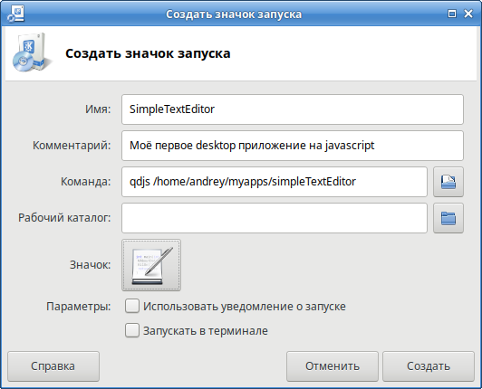
Диалог создания кнопки запуска в Xubuntu 18.04, тема оформления Kokodi, значки oxygen, так что это не KDE, но также красиво )
Обратите внимание на строку команды. Она выглядит так:
qdjs /home/username/myapps/simpleTextEditor
то есть мы вызываем веб вью qdjs и передаём ей аргументом путь к каталогу, в котором буду лежать файлы вашего будущего desktop приложения.Значок для меню приложения вы можете выбрать один из стандартных для активной темы оформления (я люблю использовать oxygen, это заставляет неопытных убунтоводов думать, что я использую kubuntu а не xubuntu, но что поделать, xubuntu нравится мне своей производительностью, а в oxygen значки классные) ), а можете нарисовать своё изображение, если умеете. Формат png прекрасно подойдёт.
Дважды кликаем на созданном значке. Xubuntu при первом клике предложит сделать файл исполняемым, соглашаемся (вы-ж-программист), запускаем, и смотрим, что получилось.
Получиться должно как на картинке
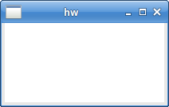
Вид окна вашего приложения, когда файлов приложения ещё нет.
При желании скопируйте кнопку запуска в каталог вашего приложения, лично я так и сделал.
-
В windows в созданном каталоге выберите в контекстном меню Проводника пункт "Создать ярлык"
Заполните поля диалога, как показано на рисунке:
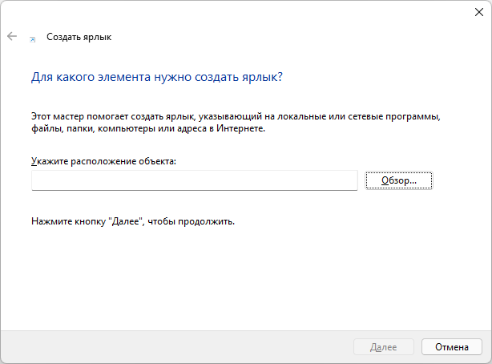
Диалог создания ярлыка в Windows 11. Красиво, но XP мне нравилась больше )
Нажав на кнопку "Обзор..." вы можете выбрать файл qdjs.exe (в ранних версиях он называется hw.exe). Если вы не изменяли параметры во время установки, он находится по адресу C:\qdjs\hw.exe
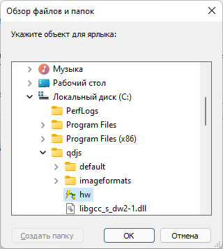
Путь к файлу hw.exe
После выбора файла дописываете в строку команды путь к каталогу, в котором будут находитсья файлы вашей программы:
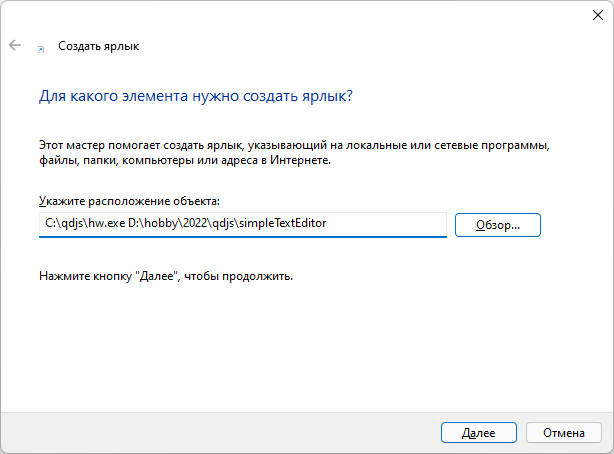
Указываем Qt5 WebView где находятся файлы нашего приложения
Обратите внимание на строку команды. Она выглядит примерно так:
C:\qdjs\hw.exe D:\myappps\simpleTextEditor
то есть мы вызываем веб вью Qt 5 (В windows мы на самом деле мы всё ещё вызываем WebView Qt 4.6) и передаём ей аргументом путь к каталогу, в котором буду лежать файлы вашего будущего desktop приложения.И вводим имя ярлыка:
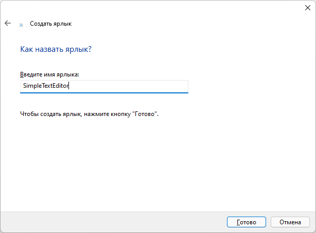
Вводим имя ярлыка и завершаем
Значок для меню приложения вы можете изменить после его создания, выбрав в свойствах ярлыка одну из иконок windows. Вы также можете нарисовать своё изображение, если умеете. Формат png прекрасно подойдёт. Сохранить его в формате ico можно например с помощью программы Gimp.
Дважды кликаем на созданном значке и смотрим, что получилось.
Получиться должно как на картинке
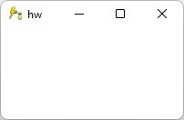
Вид окна вашего приложения, когда файлов приложения ещё нет.
-
-
Создайте index.html вашего приложения.
Мы будем двигаться от простого к сложному, поэтому сначала создадим окно фиксированного размера, а поддержку ресайза добавим в следующем, более продвинутом примере:
<DOCTYPE html> <html lang="ru"> <head> <link rel="stylesheet" type="text/css" href="./css/editor.css"> <meta charset="UTF-8"> <meta name="windowButtons" content="1010" width="800" height="600" fixed> <title>Простой редактор текстовых файлов</title> </head> <body> <div class="textplacer"> <textarea id="edit1" class="mainTextEdit" rows="1"></textarea> </div> <div class="statusBar"> 0:0</div> <script src="./js/simpleTextEditor.js"></script> </body> </html>
Закончив, запустите вашу кнопку запуска или ярлык windows, если вы в windows. Вы должны увидеть окно, как на следующем рисунке:
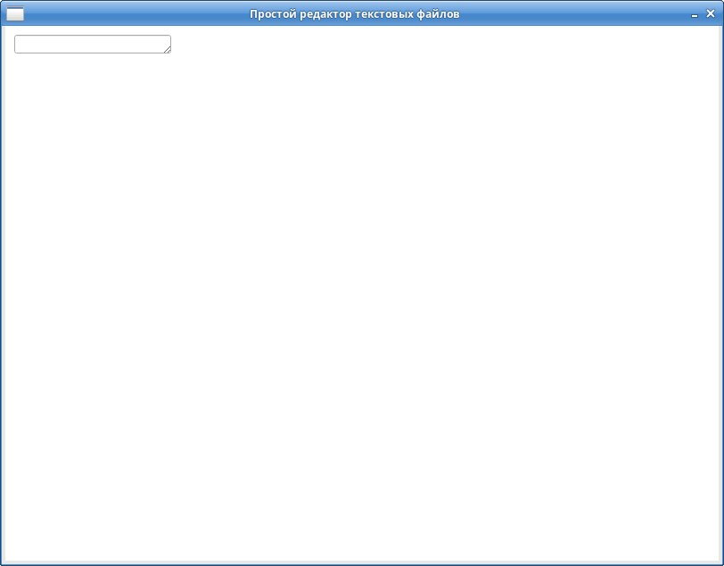
Qt5 Web View загрузило вёрстку вашего приложения.
Глядя в html примера нетрудно догадаться, что в каталоге simpleTextEditor надо создать ещё подкаталоги js и css, а в них положить файлы simpleTextEditor.js и editor.css. Можно считать, что все минимально необходимые файлы приложения созданы, можно приступать к программированию.
В windows правда есть проблема: Qt 4.6 WebView не понимает относительные ссылки на файлы, поэтому пока можете указать абсолютные пути (для нашего примера D:/myappps/simpleTextEditor/js/simpleTextEditor.js вместо ./js/simpleTextEditor.js и D:/myappps/simpleTextEditor/css/editor.css вместо ./css/editor.css).
Позже мы научимся обходить это ограничение, а если у вас уже есть какой-то опыт в программировании вы можете попробовать понять, как это сделано в данной справке, посмотрев в файлы C:\qdjs\default\index.html и C:\qdjs\default\index.tpl.html, там достаточно простой код.
Внешний вид редактора
За внешний вид в html приложениях css отвечает чуть более, чем полностью.
body { margin: 0px; padding: 0px; } .textplacer { width: 100%; height: 560px; } .textplacer textarea{ width: 100%; height: 560px; border: gray solid 1px; resize: none; } .statusBar { width: 100%; height: 40px; text-align: right; background-color: #EFE9D6; font-family: MS Sans Serif,Courier new,Liberation Sans, Geneva, Arial; }Если вы не знаете css, обратитесь на сайты или к литературе для понимания этого кода. Если же вы его знаете (а Qt5 WebView ориентировано прежде всего на людей, которые с html + js + css уже знакомы) у вас не должно возникнуть проблем с пониманием. Должен сказать, я уверен, что и люди мало знакомые с html должны оценить простоту стилизации внешнего вида html(5) приложений.
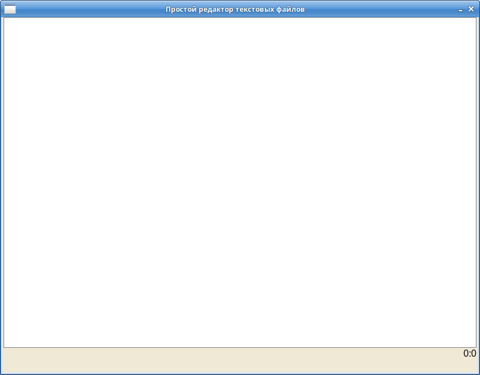
Вид вашего приложения после стилизации.
Однако, мы хотим ещё избавиться от неинтересной иконки приложения в левом вержнем углу, а для этого нам понадобится редактировать наш javascript файл.
// Главный "класс" нашего приложения function SimpleTextEditor() {} var ClassMemebers = SimpleTextEditor.prototype; // Пока будет содержать всего один метод ClassMemebers.init = function() { MW.setIconImage(App.dir() + '/img/icon48.png'); }; // Конец определения класса // Создадим экземпляр класса window.editor = new SimpleTextEditor(); // Подписываемся на событие загрузки страницы в WebView и вызываем метод init нашего класса window.addEventListener('load', function() { editor.init(); }, false );
Здесь мы объявляем главный класс нашего приложения SimpleTextEditor. Это javascript ES5, в нём нет классов на уровне языка, но есть прототипы функций, использование которых фактически даёт возможность создавать экземпляры классов, использовать наследование и всё, что мы любим. Подробнее об ООП в Javascript ES5 можно прочитать например в книге Стояна Стефанова JavaScript Шаблоны Далее я больше не буду останавливаться на том, что в javascript ES6 нет классов, буду излагать так, как будто они там есть.
Итак, мы объявили глвный класс нашего приложения SimpleTextEditor, в нём определили пока всего один метод init. Затем мы создали экземпляр класса в переменной window.editor. И далее мы подписались на событие загрузки html страницы и в момент окончания загрузки вызываем метод init. Так как все файлы нашего web приложения сразу на диске пользователя, а не в Интернете, нам нет нобходимости подписываться на событие DOMContentLoaded, правда здорово?
В методе init мы пока просто устанавливаем иконку окна приложения. Для этого наконец начинаем использовать наше Desktop API. Вызываем метод объекта MW (сокращение от MainWindow) setIconImage и передаём ему путь к иконке, которую хотим отобразить в окне приложения. Иконку предварительно надо положить в каталог simpleTextEditor/img. Для получения полного пути к файлу икноки мы используем метод объекта App dir(). dir() возвращает путь к каталогу приложения. У нас пока ничего нет для локализации приложения, но мы можем сразу же использовать "заглушку". Позже мы просто реализуем функции - заглушки и всё зарабтает. Итак, добавим внутри метода init ещё строку
MW.setTitle(L('Простой редактор текстовых файлов'));
И определим функцию L, которая впоследствии будет переводить интерфейс нашего приложения на тот язык, который выбрал пользователь.
// Пока просто возвращает тот же текст, который её передали, поддержку языков реализуем позже function L(s) { return s; }
Теперь, после того как мы добавим поддержку языков, наше приложение сможет перевести заголовок окна. Мы исползуем метод объекта MW.setTitle чтобы изменить заголовок окна.
Главное меню окна
Не знаю как вы, а я привык, чтобы у текстовых редакторов было главное меню. Без него наш простой редактор текстовых файлов даже смотрится как-то не так. Для того, чтобы меню появилось, открываем наш файл indtx.html, находим тег head и пишем в нём:
<menubar class="d-none"> <menu title="File"> <item onselect="onClickOpenMenuItem()" >Open Ctrl+O</item> <item onselect="onClickSaveMenuItem()" >Save Ctrl+S</item> <item onselect="onClickExitMenuItem()" >Exit Ctrl+Q</item> </menu> </menubar>
Запустив приложение вы должны увидеть появившуюся строку главного меню:
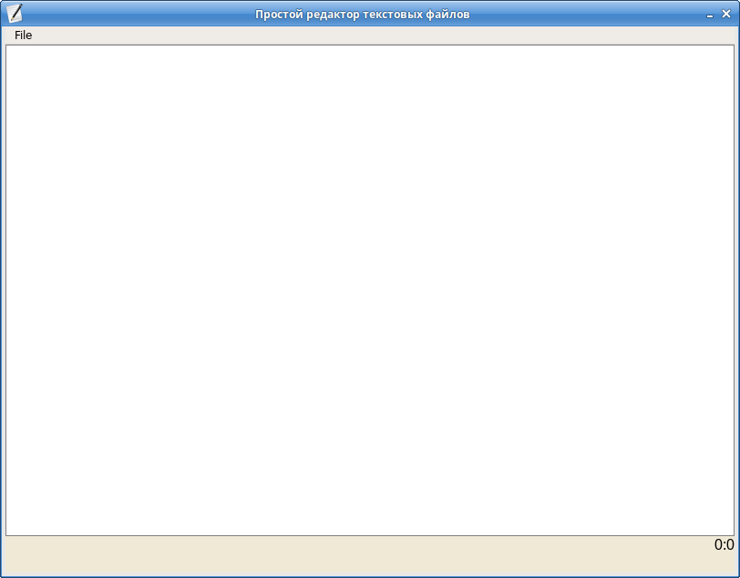
Строка главного меню.
Меню появилось, но при выборе его свойств ничего не происходит. Исправим это.
Обработка нажатия на пунктах меню
function onClickOpenMenuItem() { editor.onClickOpenMenuItem(); } function onClickSaveMenuItem() { editor.onClickSaveMenuItem(); } function onClickExitMenuItem() { editor.onClickExitMenuItem(); }
Функции - обработчики событий выбора пункта меню должны быть определены глобально. Что я и сделал, но основную логику мы конечно перенесем внутрь нашего класса. Определим методы класса SimpleTextEditor onClickOpenMenuItem, onClickSaveMenuItem, onClickQuitMenuItem
ClassMembers.onClickOpenMenuItem = function() { // Если редактируемый файл не изменен if (!this.isCurrentFileChange) { try { // Откроем диалог выбора файлов и укажем расширения файлов, которые хотим видеть в диалоге // TODO Второй аругмент - путь к последнему открытому каталогу, но это сделаем позже var fileName = Env.openFileDialog(L('Выберите текстовый файл'), '', '*.txt *.js *.cpp *.html'); // Если файл был выбран и существует if (fileName && FS.fileExists(fileName)) { // Запоминаем его адрес на диске this.currentFileName = fileName; // И загружаем в редактор, используем наше Desktop API для чтения из файла this.textarea.value = FS.readfile(fileName); } } catch (err) { alert(err); } } else { // Иначе предлагаем сохранить ранее измененный файл if (confirm(L('Файл') + ' ' + this.currentFileName + ' ' + L('изменен. Сохранить изменения перед открытием файла?'))) { FS.writefile(this.currentFileName, this.textarea.value); this.isCurrentFileChange = false; this.onClickOpenMenuItem(); } } }; // Обработка сохранения ClassMembers.onClickSaveMenuItem = function() { // Используем наше Desktop API для записи в файл FS.writefile(this.currentFileName, this.textarea.value); }; // Обработка выхода ClassMembers.onClickQuitMenuItem = function() { // Если изменений не было if (!this.isCurrentFileChange) { // Используем наше Desktop API для завершения работы приложения App.quit(); return; } // Иначе сначала сохраняем измененный файл, если пользователь с этим согласен if (confirm(L('Файл') + ' ' + this.currentFileName + ' ' + L('изменен. Сохранить изменения перед выходом?'))) { FS.writefile(this.currentFileName, this.textarea.value); this.isCurrentFileChange = false; this.onClickQuitMenuItem(); } };
Чтобы всё это заработало, добавим в наш метод init ещё несколько строк.
this.isCurrentFileChange = false; this.textarea = document.getElementById('edit1'); this.setEventListeners();
И отпределим метод setEventListeners
ClassMembers.setEventListeners = function() { var o = this; this.textarea.oninput = function(event) { o.onInput(event); } }
В обработчике ввода пока просто фиксируем факт изменения текста
ClassMembers.onInput = function(event) { this.isCurrentFileChange = true; };
В нём можно и нужно сделать ещё многое. Например наш простой текстовый редактор не понимает "правильно" клавишу Tab. Также нам надо оживить строку статуса, чтобы отображать, в какой строке и какой позиции строки находится текстовый курсор. Но для первого примера я решил ограничиться этим небольшим функционалом.
В целом наш редактор оставляет большое поле для доработок. Например, я прописал в пунктах меню хоткеи, но не реализовал пока их обработку. Нет пункта меню для создания нового файла или пересохранения файла под другим именем. Всё это достаточно легко сделать, но прямо сейчас что-то лень, к тому же первый пример получится слишком объёмным. Я считаю, что рассказал достаточно, чтобы желающие могли начать свою разработку. Список доступных методов API можно видеть слева, примеры использования некоторых из них есть в данном примере.
Буду рад, если этим API будет пользоваться кто-то ещё, кроме меня.